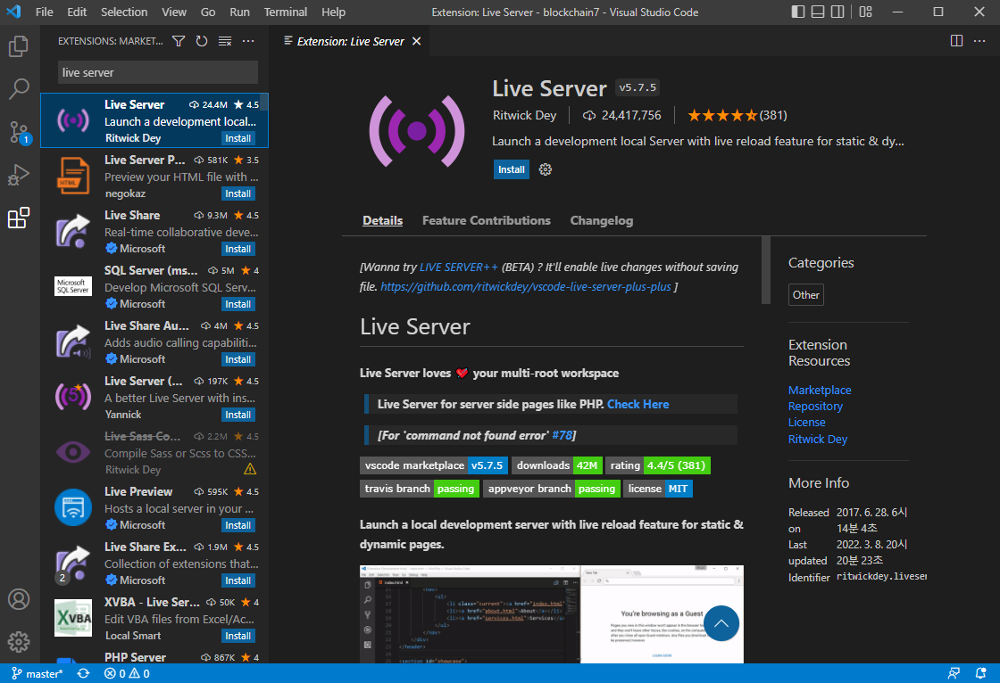
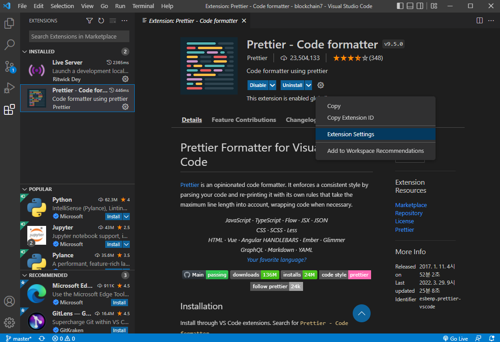
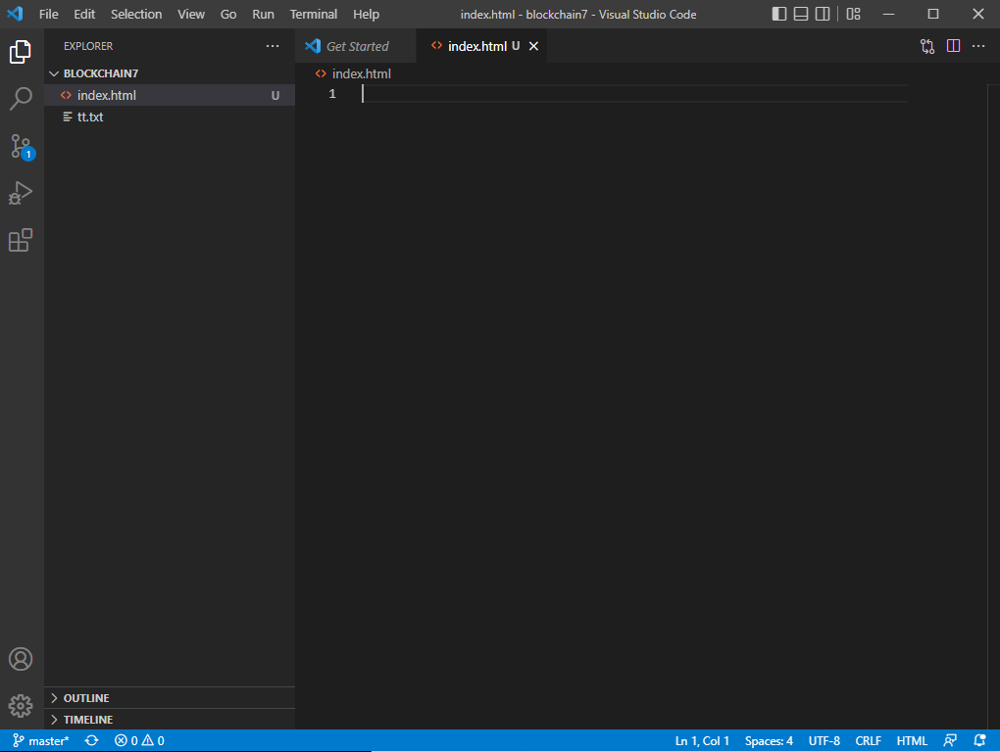
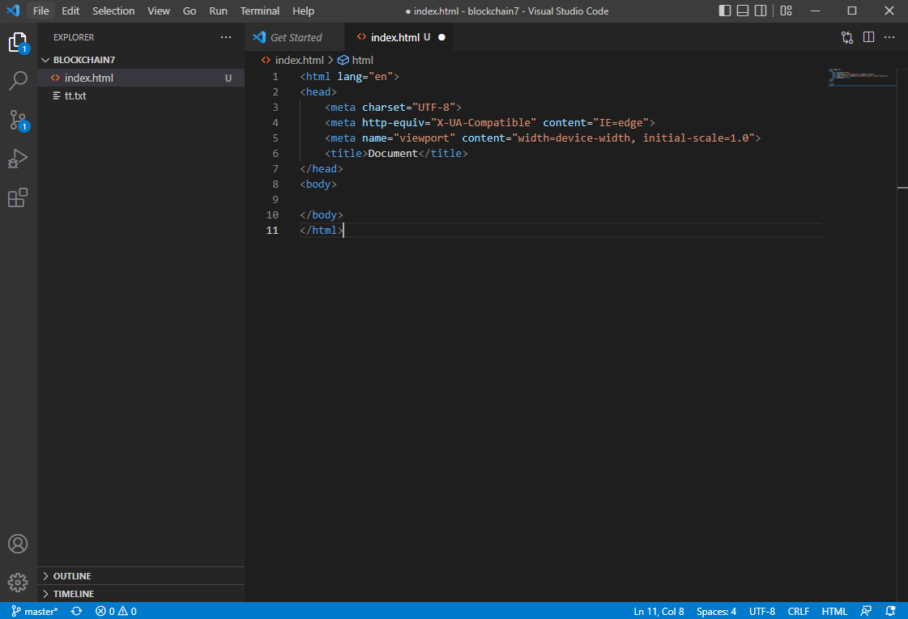
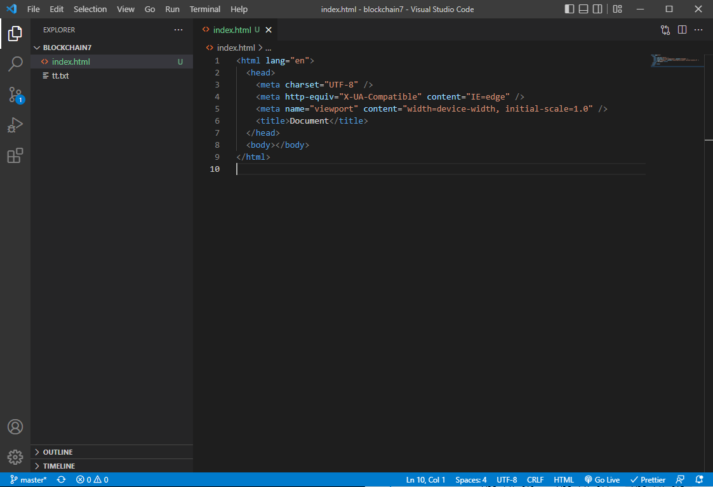

좌측에서 5개의 아이콘 중 마지막 아이콘(사각형 4개)를 클릭하면 확장
프로그램을 확인할 수 있다.
그중 prettier를 검색해 Install 버튼으로 설치한다.
prettier가 설치가 완료된 모습이다.
prettier와 마찬가디로 live server를 검색해 설치한다.

좌측 검색 입력 창에서 검색어를 지우면 현재 설치한 확장 프로그램을 확인할
수 있다.
그중 prettier를 선택한 후 기어 모양을 클릭한다.
스크린샷과 같이 메뉴 목록이 뜨며 Extension Settings를 클릭하면 설정을 볼
수 있다.
prettier 설정은 상당히 많지만 기본적으로 설정되어있는 것을 사용한다.
이후 필요하다면 수정한다.
prettier는 코딩 컨벤션이라는 규칙을 자동으로 맞추기 위해 사용한다.
코딩 컨벤션은 각 회사마다 다르기 때문에 입사 후 확인하여 그것에 맞춘다.
ex) 탭 시 띄어쓰기 2번으로 인식(보통은 띄어쓰기 4번으로 처리되지만 HTML,
CSS, Javascript 등에서는 2번으로 처리한다.)
Settings의 검색 창에 Default를 검색한다.
Default Formatter에서 방금 설치한 Prettier를 선택한다.
이후 기본 코딩 컨벤션이 prettier의 설정대로 맞춰진다.
Settings의 검색 창에 save를 검색한다.
Format on Save를 찾아 체크박스에 체크한다.
이후 파일 저장 시 Prettier의 설정대로 파일이 수정된다.
VSCode 사용 시 파일 단위로 여는 것이 아닌 폴더 단위로 여는 것을 기본으로
한다.
폴더 내의 파일을 선택하여 수정할 수 있으며 CTRL + ` 단축키를 사용해
터미널을 사용할 수 있다.
폴더를 열었을 때 해당 폴더가 믿을 수 있는 폴더인지 확인한다.
Yes 버튼을 클릭한다.
폴더에 대해 다시 확인하고 싶지 않으면 체크박스에 체크한다.

좌측 5개 아이콘 중 첫번째 것을 클릭하면 폴더의 내용을 확인할 수 있다.
파일을
생성하여 바로 작업할 수 있다.
html 파일은 doc 명령어를 사용해 자동완성으로 작성할 수 있다.
자동완성된 모습이다.
저장하면 Prettier에 의해 수정되어 저장된다.